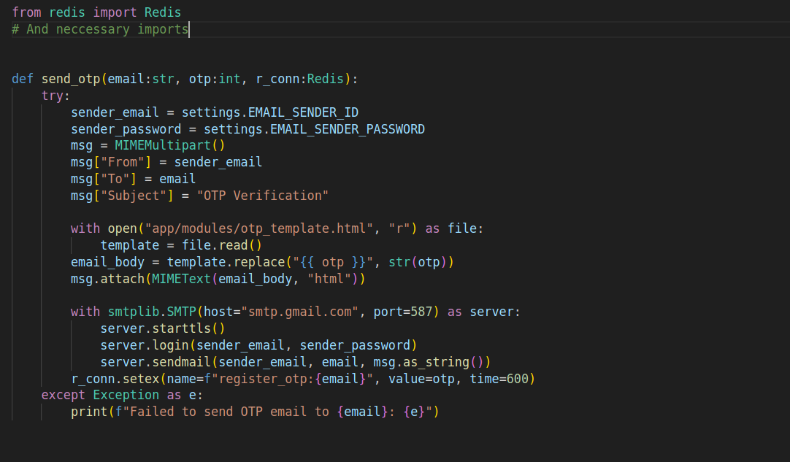

What is Celery and where It helped me
Figure 1.1
Why this Post ?
Most of the time I browse to others github I found a new command
celery -A celery_worker worker --pool=solo --loglevel=info
from other github.
I just gone through it. And Found zero use case in my small projects.
Finally today [19th March 2024] I had time to use it in my project.
The Problem I faced
In my Application there is an endpoint to send otp to the particular email for their registration. It worked on my Localhost well and takes 5.94sec as refered in figure 1.2. But this time I felt bad that wheather the user need to wait for 5 sec for the server process. So Their come the use of celery .
Figure 1.2
How I resolved it
Figure 1.3
Figure 1.4
This application was written in FastAPI. with it own in build Pydantic and the same developer's SQLModel. I used PostgreSQL as main Database and Redis as a cache memory. The Email Verification Endpoint with the function is present in Above figure 1.3 and figure 1.4 respectively.
Finally getting in to send_otp() function
Figure 1.5
And there you can find Email_sender_id which sends the email to the user. Email_sender_password is which the smtp provider gives the passcode for the particular email. There we can find open a html file named otp_template.html which has the mail template that should be send to the user. According to application hierarchy** from Backend directory.
Celery helps
Celery helps me to make the response for the /email_verification endpoint.
As celery takes response for being a broker and assigning task to the redis.
and I can see the task details in flower.
Let see the celery code and know more about it.
Figure 1.6
This is tthe update code of figure 1.4 which has configuration without celery. Now the updated code has a new method delay during the send_otp function call. This make call to the below altered send_otp function with celery config refered in below figure 1.7.
Figure 1.7
Lets break down the code
Step 1 |
Import necessary modules
smtplib to access email service |
Step 2 |
Configure celerysetting the celery config with a inital name and broker_uri and backend_uri which i provide here as reidis_uri with different db not the otp_storage db. |
Step 3 |
Create main send_otp functionusing the celery_app decorator with method task which I initialzed in previous step 2. after that the function call the another function send_email with the parameter email and otp. once the OTP is send to the new_user_email address the otp is stored in redis_cache which is another redis_db. |
Step 4 |
call send_email functionAs I told early in step 3 the send_email function carry email and otp as paramter . and it send email to the user by starting SMTP server and with the template in otp_template.html file. Here is the email sending setup with smtplib using python . |
Final output / Result
Now the application is start after the setting up of .env files with neccessary file.
And the same command that I provided early was entered by me.
uvicorn main:app --reload
to start the application
celery -A app.modules.utils worker --pool=solo --loglevel=info
** to start celery_worker according my path directory.
celery -A app.core.celery_worker flower --port=5555
start flower in port 5555 to visualize the task status.
After sending request to /email_verification endpoint. I found the response time as 44.53 ms as referred in below figure 1.8 which is 0.88% faster than response which used used without celery.
Hence the response is faster but the email recieve from the smtp service provider will be the same😊😊.
The good is the server can send response faster and the user no need to wait from the response.
For more detailed view of the application view project repo https://github.com/naveen-ravi2810/Conduct_Backend .